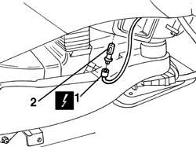

5010D19 lower mixed air temperature sensor - r+r following electrical wiring check
- Path
- Procedures > 50 AUXILIARY UNITS > 5010 CLIMATE CONTROL - MISCELLANEOUS > 5010D air temperature recording system > 5010D19 lower mixed air temperature sensor - r+r following electrical wiring check
- Kind
- repair procedure (removal / refitting; the operation number is the code)
- Applies to
- all engines; all production periods
- Interactive page
- https://sloeber94.github.io/elrnDB-a156/en/#/3238267
Applies to: all engines; all production periods
 Removing
Removing
 Refitting
Refitting7040A65 passenger compartment box lock , one , r r
1. Disconnect the electrical connection..Disconnect the electrical connection..
 | Name | Connector |
|---|---|---|
1 | Lower treated air sensor |
2. Turn the sensor and remove it

Applies to: all engines; all production periods
Refitting
RemovingVerify tjat the sensot has no damages and, if necessary, verify the electric characteristics
 | Measurement | Value | |
|---|---|---|---|
1 | Resistance at 25°C (KOhm) | 10 |
Install the sensor in its seat so that to lock it
Connect the electric connections
7040A65 passenger compartment box lock , one , r r
Verify the system functionality using Examiner or other diagnostic instruments